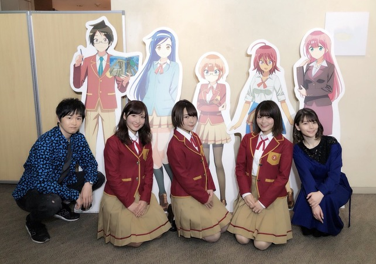
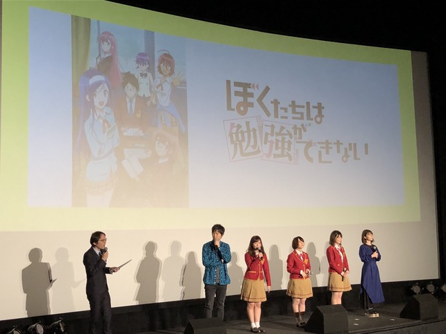
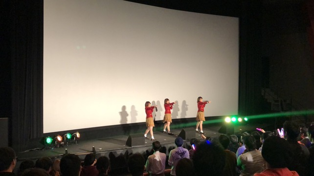
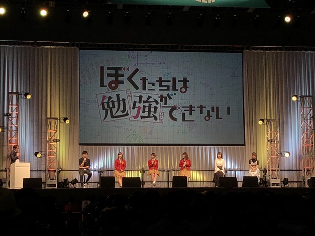
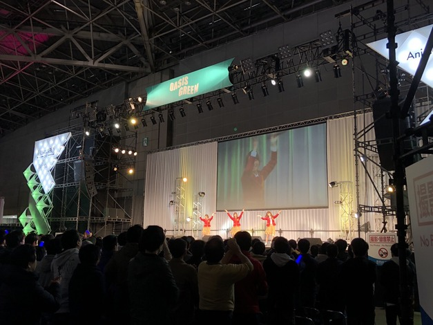
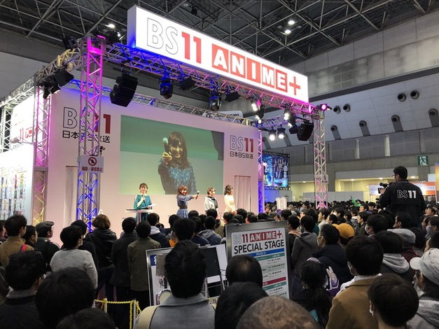
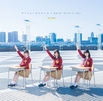

Blu-ray&DVD商品概要を公開いたしました！
完全生産限定版には全巻共通の特典としてキャラクターデザイン・佐々木政勝
描き下ろし三方背ケースの他にも、オリジナル・サウンドトラックやメインキャラクターたちによる
キャラクターソングを収録した特典CD、特製ブックレット、オーディオコメンタリーも収録！
第一巻の完全生産限定版にはアニメ版権描き下ろし全巻収納ボックスも付属！
(商品情報：https://boku-ben.com/bddvd/)
■「ぼくたちは勉強ができない」パッケージ商品概要
第1巻～第5巻（2話収録）
完全生産限定版Blu-ray：￥6,800＋税
完全生産限定版DVD：￥5,800＋税
第6巻（３話収録）
完全生産限定版Blu-ray：￥7,800＋税
完全生産限定版DVD：￥6,800＋税
・発売スケジュール
第1巻：6月26日
第2巻：7月24日
第3巻：8月28日
第4巻：9月25日
第5巻：10月30日
第6巻：11月27日
・完全生産限定版特典（全巻共通特典）
【1】キャラクターデザイン・佐々木政勝 描き下ろし三方背ケース
【2】アニメ版権描き下ろしデジパック
【3】特典CD
【4】特製ブックレット
【5】オーディオコメンタリー
・特典CD収録内容
第1巻：オリジナル・サウンドトラック
第2巻：キャラクターソング：古橋文乃（CV.白石晴香）
第3巻：キャラクターソング：緒方理珠（CV.富田美憂）
第4巻：キャラクターソング：武元うるか（CV.鈴代紗弓）
第5巻：キャラクターソング：桐須真冬（CV.Lynn）
第6巻：キャラクターソング：小美浪あすみ（CV.朝日奈丸佳）
第1巻特典
●アニメ版権描き下ろし全巻収納ボックス
●特典映像
ノンクレジットオープニング
ノンクレジットエンディング
PV・CM集 以上収録予定


NEWS
-
2019.04.07
Blu-ray&DVD商品概要公開！特典CDにはキャラクターソングも！ -
2019.04.07
ぼく勉OP 「セイシュンゼミナール」 MV [YouTube Edit] 公開！「ぼく勉」音楽ユニット「Study」が歌うOP「セイシュンゼミナール」の
MV [YouTube Edit] が公開となりました！
併せて、主題歌CDのリリース記念イベントも開催決定！
会場や日程などの詳細は追って発表いたしますので、ティーチャーの皆さん、お楽しみに★
▼「セイシュンゼミナール」MV [YouTube Edit]
https://www.youtube.com/watch?v=Qk1gxobARdE
-
2019.04.05
『Study』活動レポート ≪先行上映イベント≫更新！2019年3月30日、ユナイテッド・シネマ アクアシティお台場にて、TVアニメ『ぼくたちは勉強ができない』先行上映会が開催された。4月6日に迫った『ぼく勉』初回放送に先駆けてTVアニメ第1、2話をいち早く観ることができるこの日。さらに上映会のあとはキャスト陣のトークショー、そしてStudyによる歌唱まであるということで、劇場には多くの『ぼく勉』ファン＝ティーチャーたちが詰めかけた。Studyのライブといえば遡るところ1週間前、“AnimeJapan 2019”にて初ステージを踏んだばかり。しかもこの日披露するのはAJで歌ったデビュー曲「ready STUDY go!」ではなく、『ぼく勉』オープニング曲である「セイシュンゼミナール」。早くも新曲の披露、しかも舞台は映画館……という特殊なシチュエーションでのセカンド・ステージとなったStudyの3人に、イベント直前に話を伺った。

白石晴香さん（古橋文乃役）
今回の先行上映会は、みなさんが1話と2話をご覧になったあとでの歌唱披露なんです。みなさんが『ぼく勉』の世界観に染まっているところで、さらに私たちが盛り上げていきたいと思います。
『ぼく勉』の曲って、デビュー曲もオープニング曲もエンディング曲もどれも素敵なんですよね。今日はオープニング曲の「セイシュンゼミナール」を歌わせていただくんですが、みなさんにフルサイズを聴いていただくのは初めてなので、歌詞や振り付けのかわいさを精一杯お届けしたいと思います！
富田美憂さん（緒方理珠役）
役をいただいてアフレコが始まり、Studyとしての活動も動き出したなかで、まだ先だと思っていた上映会があっという間に感じて、今はすごく緊張しています（笑）。オープニング曲も初披露ということで、アニメ本編を観ていただいたみなさんを一気に『ぼく勉』の世界に連れて行けるようなパフォーマンスができたらなと思います。あと今日は、私たちを初めて観るティーチャーの方もたくさんいらっしゃると思うので、そんなみなさんにもStudyの良さを知っていただけるステージにできたらいいなと思っています。
鈴代紗弓さん（武元うるか役）
今回来ていただいたティーチャーのみなさんには、最速でアニメの1話、2話を観ていただけて、それに加えオープニング曲も初めてフルで披露させていただけるということで、とてもうれしいです！ 劇場で歌える機会はなかなかないことだと思いますので、ティーチャーのみなさんとしっかりアイコンタクトを取って楽しく披露したいなと思います。また、CDのジャケット写真も初めて発表されるので、ジャケットの爽やかさも見ていただけることが楽しみです。今はもちろん緊張していますが、一方でワクワクとした、すごく楽しみな気持ちでいっぱいです。
そんな中スタートした先行上映会は、TVアニメ第1、2話が上映され、そのあとはトークショーとなる。この日登壇したキャスト陣はStudyの3人に加え、唯我成幸役の逢坂良太さん、桐須真冬役のLynnさんという5人。勉強がテーマの作品らしく、自己紹介は全員「みなさん、おはようございます！」という学校を思わせる挨拶から。会場のティーチャーたちも元気よく「おはようございます！」と返して、トークショーは幕を開けた。作品プロデューサーであるアニプレックスの中山信宏さんの司会で、前週に行われたAJを振り返りつつ、話題は上映されたばかりのTVアニメの話題へ。主人公でありヒロインの教育係であり、また時にはツッコミも行う成幸を演じる逢坂さんの、さまざまなシチュエーションに応じたツッコミのバリエーションの話や、キャスト陣のアドリブについてなどアフレコでの裏話がたっぷり語られた。また第1話のアフレコでもリンゴを食べている富田さんを逢坂さんがイジったりと初回から和気あいあいとした現場であることがうかがえるエピソードが披露された。

そんな賑やかなトークをたっぷり聞いたあとは、ついにStudyによるライブ・パートへ。前回披露した「ready STUDY go!」は、すでにフルサイズでのMVが公開されており、ティーチャーたちも楽曲を知ったうえでライブに参加していたのだが、今回の「セイシュンゼミナール」はPVで一部聴ける程度で、いわばほぼ初見の状態。しかし、ストリングスに乗った3人のユニゾンのあとにバンド・サウンドが加わって勢いよく楽曲がスタートすると、客席のティーチャーたちはすぐさまステージの3人に引き込まれていった。「セイシュンゼミナール」は、オシャレだけどアッパーなバンド・サウンドに乗せてフレッシュでキュート、あとちょっと切ない3人のボーカルが代わる代わる飛び込んでくる、そんなキャッチーさが魅力の一曲。まさにアニメのオープニングにふさわしい仕上がりになっている。
そして注目すべきは、ステージ上でマイクを片手に歌いながら見せるStudyのダンスだ。「ready STUDY go!」ではセンターが次々と入れ替わるフォーメーションの激しい振り付けになっていたが、この曲でもステージの前後左右を存分に使ったアグレッシブなフォーメーションを見せていた。しかもそこに細かい振り付けが多く加わっていて、前作より大幅にレベルアップしている印象。そんなダンスも元気よく、本当に楽しそうにパフォーマンスしている3人に向かって、ティーチャーたちもペンライトと共にクラップや歓声を送っている。始まったばかりのStudyだが、ファンの心を一気に掴んだように見えたライブとなった。

Studyが「セイシュンゼミナール」を歌いきり、大きな拍手と歓声のなかでステージ上はキャスト陣がふたたび揃う。そこで先生役のLynnさんから「よくできました！」といううれしい感想ももらい、Studyセカンド・ステージは幕を閉じた。また、そのあとには中山プロデューサーからStudyの公式ホームページの開設と、5月29日にCDのリリース情報が発表された。なお、CDは『ぼく勉』OPテーマの「セイシュンゼミナール」とEDテーマの「Never Give It Up!!」とのダブルA面仕様となり、「ぼく勉盤」と「Study盤」の2種類が発売される。それぞれ収録内容や仕様が異なるので、両バージョンともチェックしてほしい。
（文・澄川龍一）
-
2019.04.03
『Study』活動レポート ≪AnimeJapan2019≫更新！2019年3月23、24日に東京ビッグサイトにて開催された世界最大級のアニメ・コンベンション“AnimeJapan 2019”。そこでTVアニメ『ぼくたちは勉強ができない』のヒロインを務める声優のうち3名から成る音楽ユニット・Studyは、2日間に渡って3ステージに出演した。その模様をお伝えしよう。
まず初日の3月23日は、“AnimeJapan”の巨大なメイン・ステージであるAJ“ROCK”ステージでのTVアニメ『ぼくたちは勉強ができない』スペシャルステージからスタート。ここでは古橋文乃役の白石晴香さん、緒方理珠役の富田美憂さん、武元うるか役の鈴代紗弓さんのStudyメンバーに加え、唯我成幸役の逢坂良太さん、桐須真冬役のLynnさん、小美浪あすみ役の朝日奈丸佳さんが登壇。放送直前となった『ぼく勉』の魅力についてたっぷり紹介するトークが行なわれた。

またこのステージでは、Study初となるライブも実施。デビュー曲「ready STUDY go!」を披露し、3人のキュートな振り付けとともにフレッシュな初ステージを終えた。

スペシャルステージを終えたStudyの3人は、制服から私服に着替えて次のイベントに移動。今度はLynnさんが司会を務めるBS11のブースにて、トーク・イベントを行なった。

真冬役のLynnさんにとってはかわいい後輩であるStudyの3人は、アフレコ現場でもとにかく仲がいい印象だそう。しかし白石さん曰く、現場では「さゆみん（鈴代さん）と美憂ちゃん（富田さん）がお互いにイジリ合っている」とのこと。「この前の収録現場でケータリングの小さいグミを見て、さゆが『美憂ちゃんサイズだね』って言ってきたんですよ！（笑）」という富田さんに対し、鈴代さんは「違うよ！ 本当に小さくてかわいいっていう意味で言ったの！ 愛はあるよ！」と返し、最後は富田さんが鈴代さんに「今日も天然絶好調だね！」と締め、その間に挟まれる白石さん……というStudyのいつもの風景がこのステージでも展開された。
翌3月24日はアニプレックスのブースにてトーク・イベント。今回は構成作家の長田
宏さんが補佐に立ちつつも、基本は3人がメインとなるStudyによるイベント。昨日のステージを観たというティーチャー（＝ファン）も大勢詰めかけ、ステージ前は人で溢れかえっていた。途中のコーナーでは、「ready STUDY go!」のMVの収録風景が映像や写真で公開されると、すでに話題にもなっている3人による“絵しりとり”の模様がスクリーンに映し出され、独特なタッチのイラストに笑いが起こる。
続いてのコーナーは、理珠のボードゲーム好きに倣って、カードに書かれたモンスターに名前をつけて、そのモンスターが出たときにいち早くその名前を言った人の勝ちという「ナンジャモンジャ」というカードゲームをプレイ。モンスターの名前をティーチャーが決め、Studyの3人がプレイすることになったのだが、ここで抜群の記憶力と反射神経を見せたのが白石さん。見事優勝を果たし、商品のクレープをゲット。最終的にはほかふたりにも仲良く分け合ってその味に舌鼓を打っていた。
2日間で巨大ステージでのライブ、先輩とのトークショー、そして3人のみでのトークという“AnimeJapan”の3つのステージを終えたStudy。『ぼく勉』のキャストとして、そしてStudyとしてTVアニメ放送が目前に迫るなか充実した2日を過ごせたようだ。 さて、2日目のステージを終えた3人を楽屋で直撃。それぞれにAJの感想を伺った。
白石晴香：最初の“ROCK”ステージは歌唱があるということで、そこでの緊張がいちばん大きかったです。LIVEパートではティーチャーのみなさんにステージを盛り上げてくれたので、緊張もほぐれ心から楽しめ頑張れました。ふたつめのBS11さんのステージでは、MCのLynnさんがまるで本当の先生のようで、3人の和気あいあいとしたところをLynnさんにいろいろ突っ込んでいただいて（笑）、アフレコブースと同じような空間の、素のままの私たちを見ていただけたんじゃないかなと思っています。2日目のステージはティーチャーのみなさんとゲームができて、Studyのみんなとご褒美のクレープを食べられてすごく楽しかったです。3ステージとも違った楽しさがあった、充実した2日間でした。Studyとしては、まだお見せできていなかった表情も見ていただけたと思いますし、『ぼく勉』とともにこれからもっともっといろんな方に知ってもらえるように、より一層頑張っていこうと思いました。
富田美憂：最初のステージはStudyとして歌って踊るというのが初めてだったので、すごく緊張していました。でもティーチャーのみなさんもすごく乗ってくださって、「どうしよう！ 緊張する！」って思っていたのが、今はいったんホッとひと段落しています。メインキャストも揃ってイベントできたこともよかったですね。ふたつ目のステージも最初のステージとはまた違った話もできて、特に最初のステージの裏側を話すことができてすごく楽しかったです。3つ目のステージも、Studyのメンバーだけで登壇したのは初めてだったので、「ちゃんと進行できるかな？」という気持ちはあったんですけど（笑）、理珠の好きなボードゲームをティーチャーのみなさんを巻き込んで楽しめたステージになったんじゃないかなと思います。また機会があったら一緒にゲームができるイベントもやってみたいですね。次の先行上映会でも歌って踊る機会があるので、そこに向けてみんなでレッスンを頑張りたいと思います。
鈴代紗弓：AJでは３つのステージに出させていただいて、まずたくさんのティーチャーのみなさまとともにこうしてイベントができたことがすごくうれしかったです。初めてのこともたくさんあって“勉強”になりましたし、先輩でもあるおふたりにも色々とサポートしていただいて、感謝の気持ちでいっぱいでした。スタッフの皆さんにも「大丈夫だよ」と声をかけていただいたり、何よりティーチャーの皆様が一緒に盛り上がってくださって、すべてが本当にありがたいことだと感じました。また、Studyとしての歌唱は初めてだったのにもかかわらず、ティーチャーのみなさまが盛り上がってくださったのが本当にうれしくて、今後さらに盛り上げていきたいと思いましたし、自分たちだけじゃなくて見てくださるみなさまも楽しんでもらえるようなイベントづくりができるように頑張りたいと思いました。あとティーチャーのみなさまとまた一緒に何かのボードゲームもできればいいなと思いました！ ティーチャーのみなさまがいてくださってこそと感じておりますので、これからも『ぼく勉』そしてStudyの応援をよろしくお願いします！
（文・澄川龍一）
-
2019.04.02
配信情報追加しました！ -
2019.03.30
「セイシュンゼミナール／Never Give It Up!!」応援店特典解禁！5月29日（水）発売のTVアニメ「ぼくたちは勉強ができない」のオープニングテーマ「セイシュンゼミナール」と、
エンディングテーマ「Never Give It Up!!」を収録した両A面シングルの応援店特典内容と絵柄を解禁いたしました！
◆応援店特典
◇描き下ろしA4サイズクリアファイル
(古橋文乃、緒方理珠、武元うるか)
【対象店舗】
後日店舗名詳細をご案内いたします。今しばらくお待ちください
◇「Study」L版ブロマイド
【対象店舗】
アニメイト、 ゲーマーズ、 ソフマップ(CD取り扱い店舗のみ)、 とらのあな(一部店舗除く)、 Amazon(【Amazon.co.jp限定】商品のみ対象)、 タワーレコード、 HMV、 WonderGOO/新星堂、 ANIPLEX+
※先着特典となります。各店舗ともなくなり次第終了となります。予めご了承ください。
※店舗ごとにStudyの写真が異なります。写真絵柄は現在鋭意選定中！
是非皆様ご予約ください！
-
2019.03.30
「セイシュンゼミナール/Never Give It Up!!」商品情報・Study盤ジャケット画像公開！こだまさおりさん作詞、山田高弘さん作曲の
オープニングテーマ「セイシュンゼミナール」と、
川田まみさん作詞、井内舞子さん作曲のエンディングテーマ「Never Give It Up‼」が
収録されたCDの発売情報を公開いたします！
・Study盤ジャケット

・商品概要
「セイシュンゼミナール／Never Give It Up!!」商品概要
アーティスト名：Study 古橋文乃（CV.白石晴香）・緒方理珠（CV.富田美憂）・武元うるか（CV.鈴代紗弓）
商品タイトル：「セイシュンゼミナール／Never Give It Up!!」
発売日：2019年5月29日（水）
SVWC-70411~70412
￥1,500（税抜） ￥1,620（税込）
4月より放送開始のTVアニメ「ぼくたちは勉強ができない」の
オープニングテーマ「セイシュンゼミナール」と、エンディングテーマ「Never Give It Up!!」を収録した両A面シングル！
■Study盤（期間生産限定盤）
・CD＋Blu-ray2枚組
・「ぼく勉」出演キャストによるユニット“Study”の「セイシュンゼミナール」ミュージックビデオを収録！
・Study特製フォトブックレット（20P）を封入！
※2020年5月末日までの期間生産限定盤となります。
≪CD収録内容≫
01. セイシュンゼミナール
02. Never Give It Up‼
03. セイシュンゼミナール（Instrumental）
04. Never Give It Up‼（Instrumental）
≪BD収録内容≫
「セイシュンゼミナール」ミュージックビデオ収録
Study First Interview
以上、収録予定
MUSICページも合わせてチェックして下さい！
https://boku-ben.com/study/music/
-
2019.03.30
「セイシュンゼミナール/Never Give It Up!!」商品情報・ぼく勉盤ジャケット画像公開！こだまさおりさん作詞、山田高弘さん作曲の
オープニングテーマ「セイシュンゼミナール」と、
川田まみさん作詞、井内舞子さん作曲のエンディングテーマ「Never Give It Up‼」が
収録されたCDの発売情報を公開いたします！
・ぼく勉盤ジャケット
・商品概要
「セイシュンゼミナール／Never Give It Up!!」商品概要
アーティスト名：Study 古橋文乃（CV.白石晴香）・緒方理珠（CV.富田美憂）・武元うるか（CV.鈴代紗弓）
商品タイトル：「セイシュンゼミナール／Never Give It Up!!」
発売日：2019年5月29日（水）
SVWC-70413
￥1,500（税抜） ￥1,620（税込）
4月より放送開始のTVアニメ「ぼくたちは勉強ができない」の
オープニングテーマ「セイシュンゼミナール」と、エンディングテーマ「Never Give It Up!!」を収録した両A面シングル！
■ぼく勉盤
・キャラクターデザイン・佐々木政勝 描き下ろしイラストジャケット仕様！
・吟（BUSTED ROSE）によるRemix Track（2曲）を収録！
≪CD収録内容≫
01. セイシュンゼミナール
02. Never Give It Up!!
03. セイシュンゼミナール（Remix Ver.）
04. Never Give It Up‼（Remix Ver.）
05. セイシュンゼミナール（Instrumental）
06. Never Give It Up‼（Instrumental）
以上、収録予定
ぜひMUSICページもチェックして下さい！
https://boku-ben.com/study/music/